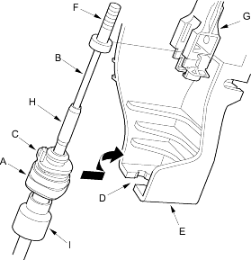

- Rotate the socket holder (A) on the shift cable (B) counterclockwise a quarter turn; the projection (C) on the socket holder is directed opposite the opening (D) of the shift lever bracket base (E). Slide the holder to install into the shift cable bracket base with installing the shift cable end (F) into the shift cable end holder (G).
NOTE: Do not install the shift cable by twisting the shift cable guide (H) and damper (l).

- Verify that the shift cable end is properly installed into the shift cable end holder. If improperly installed, remove the shift cable from the shift lever bracket base and reinstall the shift cable end into the shift cable end holder while the shift cable is on the shift lever bracket base.
- Rotate the holder clockwise a quarter turn to secure the shift cable.
- Install the new shift cable lock (A) to secure the shift cable end and shift cable end holder, then push the lock tab (B) up until it stops to lock the joint.

- Remove the 6.0 mm (0.24 in.) pin that was installed to hold the shift lever.
- Move the shift lever to each gear and verify that the A/T gear position indicator follows the transmission range switch.
- Push the shift lock release and verify that the shift lever releases.
- Reinstall the console panel and related parts.